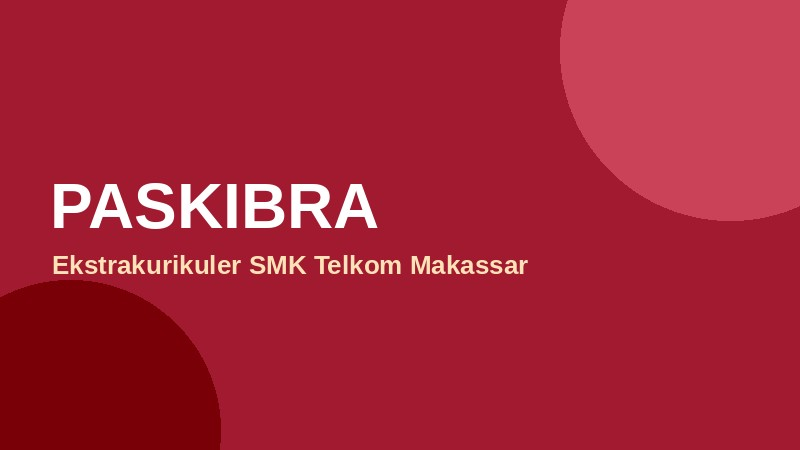

SMK Telkom Makassar
Ekskul Paskibra (Pasukan Pengibar Bendera) membentuk siswa yang disiplin, tangguh, dan cinta tanah air melalui latihan baris-berbaris.

| Hari | Jam | Tempat | Kegiatan |
|---|---|---|---|
| Senin | 15.30 - 17.00 | Lapangan upacara | Latihan PBB |
| Jumat | 14.00 - 16.00 | Lapangan upacara | Latihan pengibaran |
Ikuti kegiatan kami di Instagram Ekskul Paskibra.
Dibuat oleh Kelompok 3 - Kelas XI
© 2026